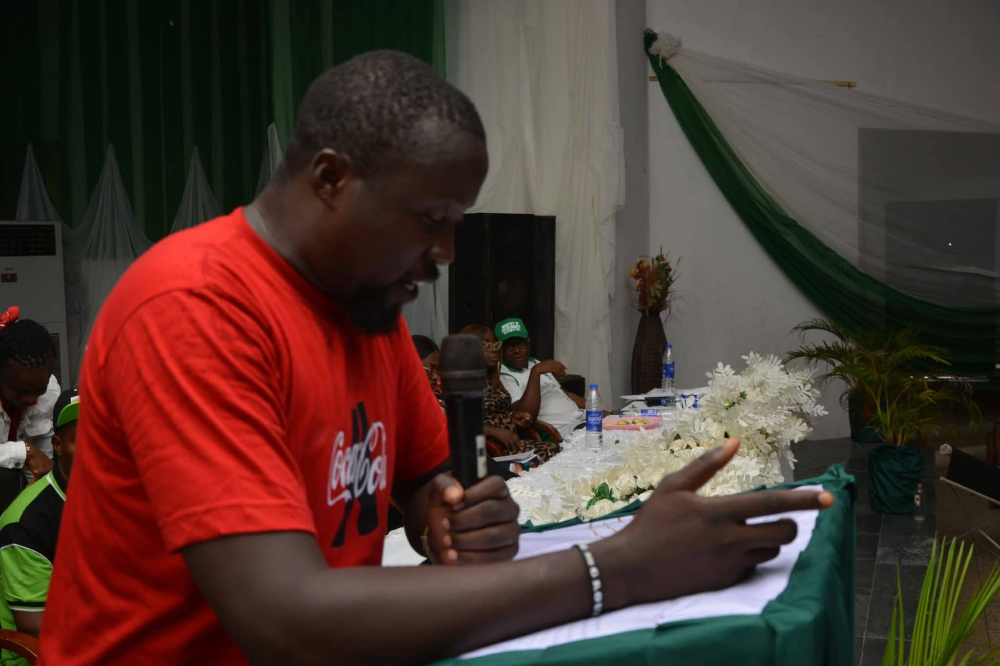

Anambra Waste Recyclers Association
Organising Anambra’s recycling sector for a sustainable future.
ASWRA is a state-level membership association bringing together waste recyclers, recovery workers, recycling enterprises, cooperatives and strategic partners to strengthen the sector, promote responsible recycling and advance sustainable livelihoods across Anambra State.
Turning Waste into Wealth.
Welcome
Welcome to ASWRA
ASWRA exists to organise, empower and support people and organisations working across the waste recovery and recycling value chain in Anambra State. It provides a collective platform for capacity development, cooperation, industry engagement and advocacy.
The Association is open to individual recyclers, aggregators, recycling businesses, cooperatives, institutions and partners, and promotes constructive engagement with public agencies and development partners. Its role is to strengthen the sector and facilitate opportunities, not to act as a regulator or replace the responsibilities of government agencies.
Discover ASWRA
Our work
Strengthening the recycling sector
Member organisation
Providing an organised platform for eligible individuals, businesses, cooperatives and institutions in the recycling sector.
Capacity development
Promoting training, practical knowledge, safe working practices and professional development.
Market and partnership facilitation
Helping members connect with relevant buyers, processors, producers and potential partners where opportunities exist.
Advocacy and sustainability
Supporting constructive stakeholder engagement and responsible waste recovery across Anambra State.
Work with ASWRA
Building a stronger recycling ecosystem requires collaboration.
We welcome engagement from recyclers, businesses, public institutions, community organisations and development partners whose objectives align with responsible recycling and sustainable development.
Join the community
ASWRA is open to individual recyclers, recycling businesses, cooperatives, institutions and partners. Apply online in a few minutes, then track your application with your reference number.
Understanding the sector
How recyclable materials move through the value chain
Recycling is a connected process. It begins with the responsible recovery of materials and depends on reliable sorting, aggregation, transportation and processing before recovered resources can return to productive use. Each stage contributes to a more organised and efficient system.
Collection and recovery
Individuals and community operators recover recyclable materials from households, businesses and other sources. Safe handling and responsible collection help keep useful materials out of drains, open spaces and disposal sites.
Sorting and aggregation
Recovered materials are separated by type and quality, then brought together in quantities that can be handled by buyers and processors. Consistent sorting and transparent weighing support trust across the chain.
Processing and reuse
Processors prepare recovered materials for recycling and manufacturing. Reliable supply, appropriate equipment and quality standards help materials become useful inputs again.
ASWRA's role is to support cooperation among these participants, share relevant information and promote a stronger operating environment for the recycling sector.
Shared responsibility
A cleaner environment is built through everyday decisions
Households, markets, institutions, businesses, recyclers and public authorities all influence how waste is handled. Separating recoverable materials, keeping them free from avoidable contamination and using responsible collection channels can improve the quality of materials available for recovery.
Progress also depends on practical working conditions for recyclers, reliable relationships with buyers and processors, public awareness and constructive cooperation across communities.
Be part of the organised recycling community
If you work in waste recovery, operate a recycling enterprise, represent a cooperative or support environmental development, explore how ASWRA membership and collaboration may be relevant to your work.